연령·감정별 초상화
요청한 100종과 기본 표정 20종 · 128×128 WebP · 초상화 전체 약 185KB
연령은 화면용 진행 단계이며 NPC의 실제 생년월일을 정의하지 않습니다.
게임으로 돌아가기주인공
초년 · 기쁨중년 · 기쁨장년 · 기쁨노년 · 기쁨초년 · 슬픔중년 · 슬픔장년 · 슬픔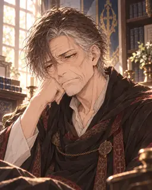
노년 · 슬픔초년 · 화남중년 · 화남장년 · 화남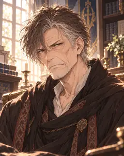
노년 · 화남초년 · 피곤중년 · 피곤장년 · 피곤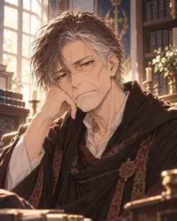
노년 · 피곤초년 · 황당중년 · 황당장년 · 황당노년 · 황당초년 · 기본중년 · 기본장년 · 기본노년 · 기본 미나 · 짧은 적갈색 머리
초년 · 기쁨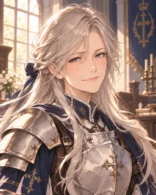
중년 · 기쁨장년 · 기쁨노년 · 기쁨초년 · 슬픔중년 · 슬픔장년 · 슬픔노년 · 슬픔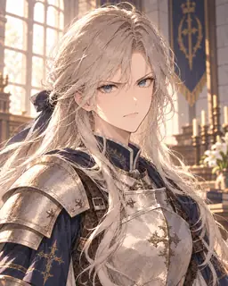
초년 · 화남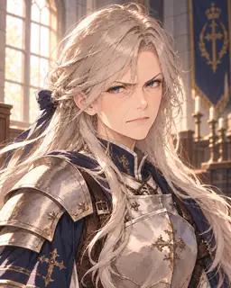
중년 · 화남장년 · 화남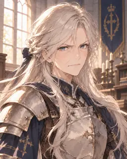
노년 · 화남초년 · 피곤중년 · 피곤장년 · 피곤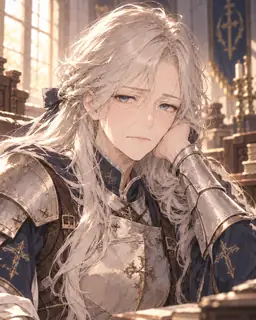
노년 · 피곤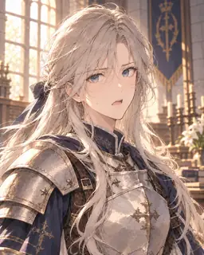
초년 · 황당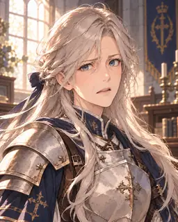
중년 · 황당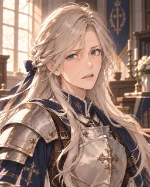
장년 · 황당노년 · 황당초년 · 기본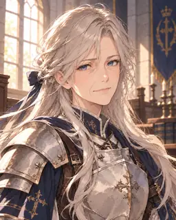
중년 · 기본장년 · 기본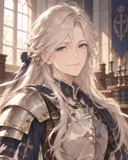
노년 · 기본 에리시아 · 긴 금발과 땋은 머리
초년 · 기쁨중년 · 기쁨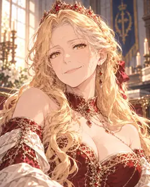
장년 · 기쁨노년 · 기쁨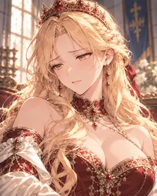
초년 · 슬픔중년 · 슬픔장년 · 슬픔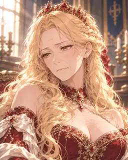
노년 · 슬픔초년 · 화남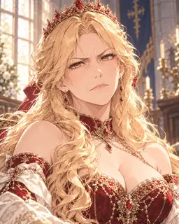
중년 · 화남장년 · 화남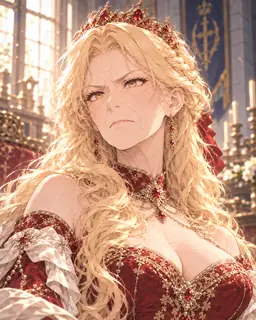
노년 · 화남초년 · 피곤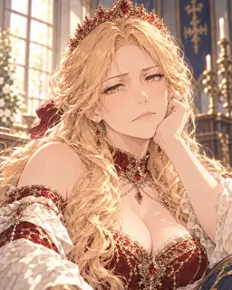
중년 · 피곤장년 · 피곤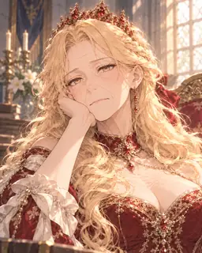
노년 · 피곤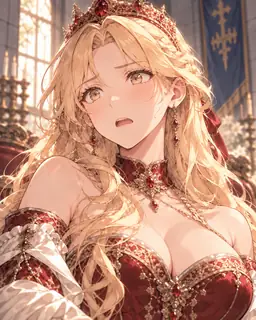
초년 · 황당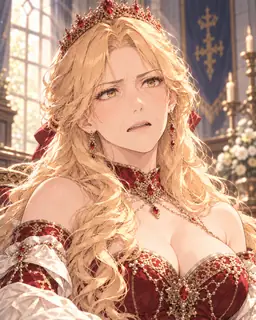
중년 · 황당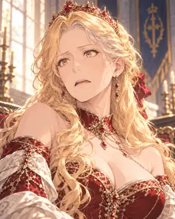
장년 · 황당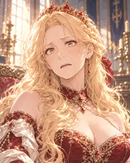
노년 · 황당초년 · 기본중년 · 기본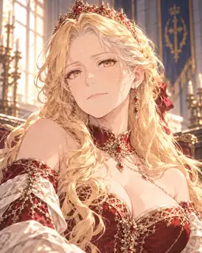
장년 · 기본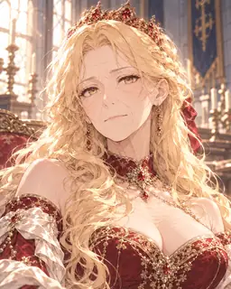
노년 · 기본 국왕
초년 · 기쁨중년 · 기쁨장년 · 기쁨노년 · 기쁨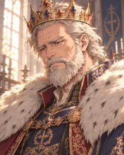
초년 · 슬픔중년 · 슬픔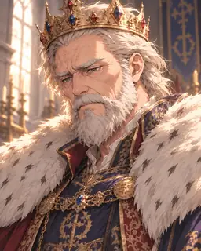
장년 · 슬픔노년 · 슬픔초년 · 화남중년 · 화남장년 · 화남노년 · 화남초년 · 피곤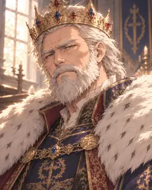
중년 · 피곤장년 · 피곤노년 · 피곤초년 · 황당중년 · 황당장년 · 황당노년 · 황당초년 · 기본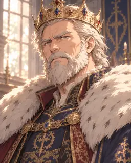
중년 · 기본장년 · 기본노년 · 기본 세렌 · 검푸른 단발과 안경
초년 · 기쁨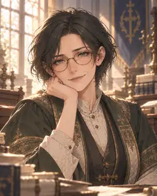
중년 · 기쁨장년 · 기쁨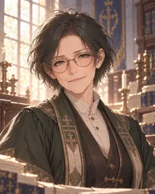
노년 · 기쁨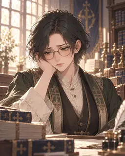
초년 · 슬픔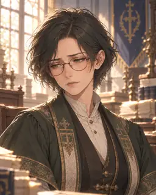
중년 · 슬픔장년 · 슬픔노년 · 슬픔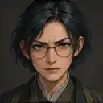
초년 · 화남중년 · 화남장년 · 화남노년 · 화남초년 · 피곤중년 · 피곤장년 · 피곤노년 · 피곤초년 · 황당중년 · 황당장년 · 황당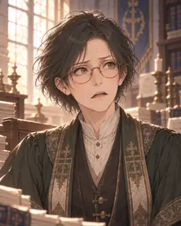
노년 · 황당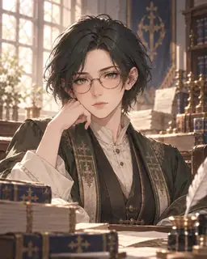
초년 · 기본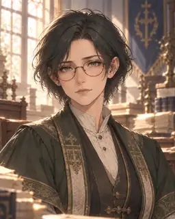
중년 · 기본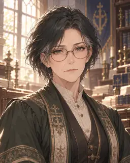
장년 · 기본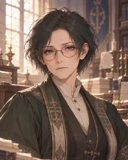
노년 · 기본